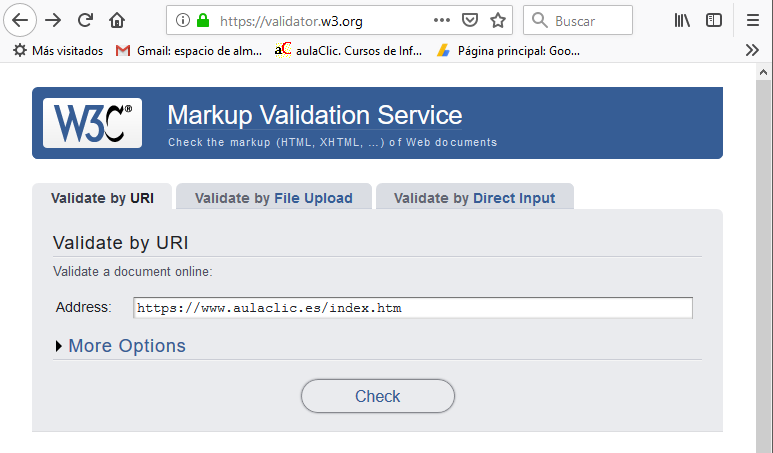

Al escribir código HTML podemos cometer errores, estos errores pueden ser de varios tipos, los errores sintácticos son los que se producen cuando no escribimos las etiquetas de HTML según las reglas, y los errores lógicos son los que, aun siguiendo las reglas, producen un resultado no deseado.
Por ejemplo un error sintáctico sería no escribir la etiqueta de cierre </p> de un párrafo. Un error lógico sería escribir mal el valor por defecto en un formulario, por ejemplo, en el campo "edad" lugar de value="16", escribimos value="26".
Los errores sintácticos son más sencillos de encontrar puesto que suelen ser detectados por los editores de código modernos y también por las herramientas de validación, en ocasiones producen un desajuste visible en la página web, y en contadas ocasiones provocan un mensaje de error del navegador
Los errores lógicos pueden ser más difíciles de detectar ya que no suelen dar mensajes de error, y muchas veces producen un resultado aparentemente correcto. Por ejemplo, en el caso anterior, si escribimos value="26", el programa que trata el formulario asignará una edad de 26 en lugar de 16 y el sujeto recibirá el tratamiento correspondiente a una persona "mayor de edad", en lugar del que le correspondería como "menor de edad", pero no sería algo fácil de detectar.
Aunque hemos dicho que los errores sintácticos son más sencillos de encontrar, también es cierto que muchas veces pasan desapercibidos ya que no producen ningún error visible. Esto es debido a que los navegadores web encargados de ejecutar el código HTML son muy permisivos con estos errores y disponen de reglas internas que permiten obviar el error, en muchos casos producen un resultado correcto, corrigiendo el error de forma adecuada, y en otros casos no son capaces de corregir el error produciendo un resultado inesperado pero sin mostrar ningún error. En general, el navegador trata de mostrar la página lo mejor que puede sin mostrar mensajes de error al usuario.
Un ejemplo del primer caso sería anidar comentarios, algo no permitido en HTML, si cometemos este error será obviado por el navegador y no producirá ningún efecto visible en la página web.
Un ejemplo del segundo caso sería olvidar cerrar una etiqueta <div>, aunque el navegador no dará ningún error, es probable que al visualizar la página web se produzca un descuadre en el diseño o algún estilo no se aplique donde queríamos.
En ambos casos, estos tipos de errores serán detectado si utilizamos una herramienta de validación.
El comportamiento permisivo de los navegadores en el tratamiento de errores, en general, es beneficioso porque corrige errores simples, pero en otros casos oculta errores, con lo cual hace más difícil corregirlos. Por esto, siempre es conveniente validar el código HTML aunque no observemos ningún error al visualizar la página.
La herramienta de validación online de código HTML de W3C es de las más usadas, es totalmente gratuita y muy fácil de usar. Basta introducir la dirección de la página web y nos proporcionará un listado con los errores, la línea y columna del error, la descripción del error y el tipo de error (warning, error, etc.).

Como decíamos, los editores de código modernos también ayudan a corregir errores en el mismo momento de escribir el código ya que son capaces de detectar diversos errores sintácticos, por ejemplo, etiquetas sin cerrar, comillas sin cerrar, identificadores duplicados, etc.
Por supuesto, también se pueden producir errores en las hojas de estilo CSS, para validarlas también existe una herramienta online de W3C.
Respecto a los errores en las hojas de estilo, una gran parte de ellos se producen porque el nombre de los estilos declarados en la hoja de estilo no concuerdan con los empleados en el código HTML, en estos caso lo que ocurre es simplemente que no se aplica el estilo correspondiente, lo cual puede tener diversos grados de gravedad según cada caso.
También podemos cometer el error de escribir mal propiedades CSS o no utilizar bien las reglas de sintaxis: llaves mal cerradas, puntos y coma mal puestos, etc.
Como vimos en la unidad 9, se pueden producir colisiones al aplicar las propiedades, si no somos conscientes de estas colisiones el diseño no será el esperado, este tipo de errores pueden ser bastante difíciles de localizar. También podemos cometer errores a la hora de diseñar la estructura de la página por comportamientos inesperados de elementos flotantes, contenedores div, etc.
Una forma de buscar errores de diseño en la estructura de la página es dibujar los bordes de los todos elementos para ver qué posición ocupa cada uno, una vez realizadas las comprobaciones, eliminaremos esos bordes. Para dibujar todos los bordes con unas pocas líneas de código podemos usar este código CSS, propuesto por Chris Page, que lo que hace es dibujar los bordes de los elementos de un color y grosor distinto según el nivel de anidamiento de cada elemento, así identificaremos todos los elementos que forman la página web.
* { outline: 2px dotted red }
* * { outline: 2px dotted green }
* * * { outline: 2px dotted orange }
* * * * { outline: 2px dotted blue }
* * * * * { outline: 1px solid red }
* * * * * * { outline: 1px solid green }
* * * * * * * { outline: 1px solid orange }
* * * * * * * * { outline: 1px solid blue }
Otra forma de identificar un elemento concreto es darle un color de fondo intenso para localizarlo fácilmente.
Para encontrar errores también es muy útil del modo "inspeccionar" (ctrl + mayús + i) de los navegadores (Chrome, Firefox, Edge, etc.) que permite ver fácilmente el código HTML y CSS que afecta a cada elemento de la página.
Aunque tiene poco que ver con el tipo de errores de los que estamos hablando es este punto, en ocasiones nuestra página web se puede comportar de forma inesperada en algún navegador, ya que, lamentablemente, no todos ejecutan de código de la misma forma. Para minimizar este tipo de problemas conviene utilizar elementos estándar y evitar elementos o propiedades experimentales, no recomendadas todavía por W3C.org. Para identificar este tipo de errores conviene probar las páginas en distintos navegadores. También es recomendable probar las páginas en distintos dispositivos de diferentes tamaños para comprobar si la página se adapta bien a cada anchura.